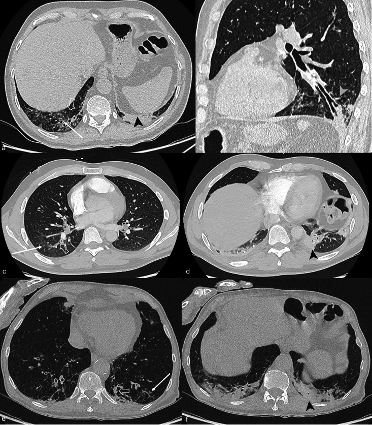
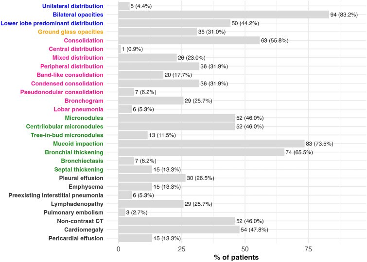
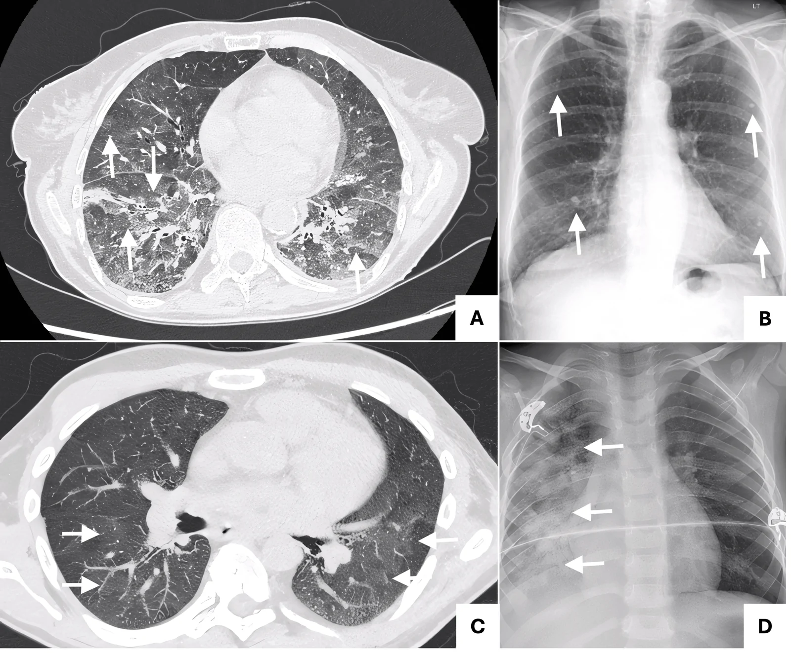
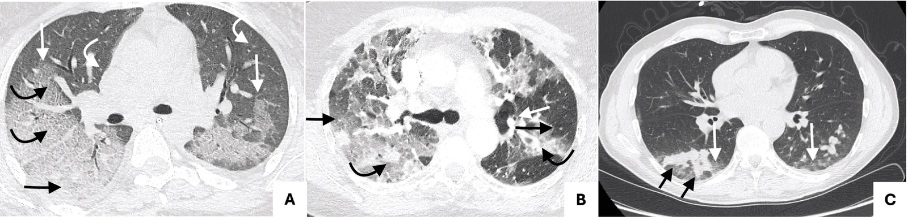
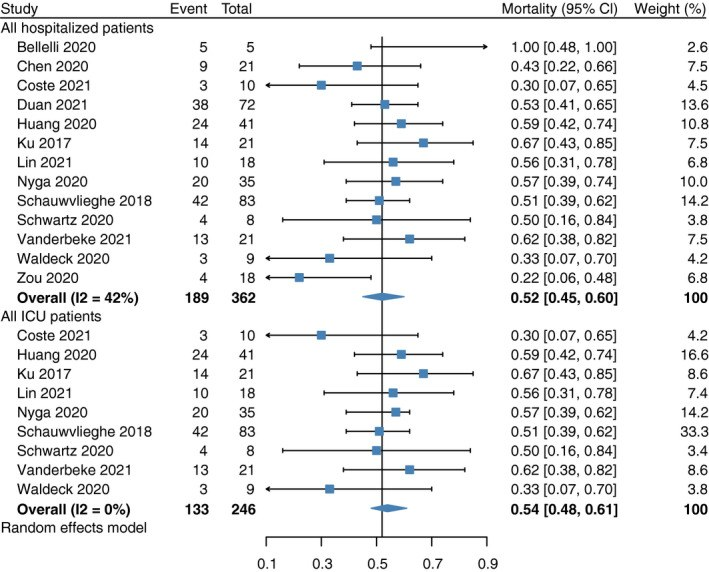

947 — Viêm phổi do RSV và cúm ở người ghép tạng: mẫu hình "hướng đường thở" khác CMV/PJP, và bội nhiễm Aspergillus / RSV and influenza pneumonia in transplant recipients
Tags: pattern:tree-in-bud pattern:day-thanh-phe-quan pattern:nut-nhay pattern:kinh-mo pattern:dong-dac vung:phoi protocol:CT-nguc-lat-mong protocol:PCR-multiplex protocol:BAL score:CCTS
Mức chắc chắn (certainty): tổng hợp y văn (literature synthesis) — ghép phân tích gộp hình ảnh CT của RSV 217 ca (Riccò et al. 2023, Children 10:1169, PMC10378054, CC BY 4.0), đoàn hệ CT 113 người lớn nhiễm RSV (Le Goff et al. 2026, Infect Dis Ther, PMC12783463, CC BY-NC 4.0), đoàn hệ 76 người ghép phổi RSV/hMPV (Jiménez-Gómez et al. 2026, Life, PMC13514294, CC BY 4.0), đoàn hệ 1.061 người ghép gan/thận nhiễm cúm (Arentoft et al. 2023, Microbiol Spectr, PMC10101112, CC BY 4.0), tổng quan hệ thống gánh nặng RSV ở người suy giảm miễn dịch (Saeedi et al. 2026, Infect Dis Ther, PMC13476412, CC BY-NC 4.0) và phân tích gộp 6.024 bệnh nhân cúm nhập viện về bội nhiễm Aspergillus (Shi et al. 2022, Mycoses, PMC9306612, CC BY-NC 4.0). Nhóm không có bệnh nhân của mình.
Câu chốt: ở người ghép tạng, RSV và cúm không cho "kính mờ đối xứng" như CMV hay PJP mà cho tổn thương hướng đường thở: tree-in-bud, dày thành phế quản, nút nhầy (mucoid impaction), kèm kính mờ/đông đặc vái từng ổ. Trong đoàn hệ 113 người lớn nhiễm RSV, nút nhầy 73,5%, dày thành phế quản 65,5%, đông đặc 55,8%, vi nốt 46,0%; điểm CT (CCTS) > 6 làm tăng nguy cơ bệnh nặng gấp 3,66 lần. Nguy hiểm thật sự là bội nhiễm Aspergillus sau cúm: gộp 14 nghiên cứu, 10% bệnh nhân cúm nhập viện có IPA, tử vong 52% — nên CT không được dừng ở "viêm phổi do virus" mà phải trả lời câu hỏi thứ hai: có nấm xâm lấn chưa?
1. Tổng quan bệnh học – cơ chế hình ảnh (TẠI SAO)
1.1 Hai virus, một điểm chung: tấn công biểu mô đường thở
- RSV (human respiratory syncytial virus, Paramyxoviridae) nhiễm tế bào biểu mô có lông chuyển của phế quản và tiểu phế quản → viêm tiểu phế quản (bronchiolitis) với phù, thâm nhiễm tế bào đơn nhân, tế bào bong và nút nhầy bít lòng tiểu phế quản. Ở người ghép tạng, miễn dịch tế bào T suy giảm → tải lượng virus cao hơn, thải virus lâu hơn (nhiều tuần), dễ lan xuống phổi và dễ đồng nhiễm.
- Cúm (influenza A/B, Orthomyxoviridae) nhiễm biểu mô phế quản và phế nang; tổn thương nặng gây tổn thương phế nang lan tỏa (diffuse alveolar damage) + viêm nội mô, nên ngoài đường thở còn kính mờ và đông đặc.
- TẠI SAO tree-in-bud: "cây nở hoa" là hình chiếu của tiểu phế quản bị nhét đầy dịch/mủ (ống cây) với nốt trung tâm tiểu thùy ở đầu tận (hoa). Đây là dấu hiệu của bệnh lý lòng đường thở, không phải bệnh lý mô kẽ — vì vậy nó không đặc hiệu cho một virus mà định hướng nhóm bệnh: nhiễm virus đường hô hấp, vi khuẩn, mycobacteria, xơ nang.
- TẠI SAO dày thành phế quản: phù niêm mạc + thâm nhiễm viêm quanh phế quản; đo trên CT lát mỏng > 1–2 mm ở phế quản phân thùy là bất thường. TẠI SAO nút nhầy: chất nhầy + tế bào bong + fibrin đặc lại trong lòng phế quản, cản quang thấp (dịch), có thể thay đổi vị trí giữa hai lần chụp.
- TẠI SAO kính mờ/đông đặc: khi virus lan xuống phế nang → dịch và tế bào viêm lấp khoang phế nang một phần (kính mờ) hoặc toàn bộ (đông đặc); phân bố vái từng ổ, quanh phế quản, ưu thế đáy — khác kính mờ lan tỏa đối xứng của PJP.
1.2 Vì sao người ghép tạng là "ổ" của cả virus và nấm
- Ức chế miễn dịch T làm giảm thanh thải virus và giảm hàng rào niêm mạc; corticoid liều cao làm giảm viêm nhưng cũng che mất sốt và đông đặc, khiến hình ảnh nhẹ hơn bệnh thật.
- Cúm làm hỏng biểu mô đường thở + giảm bạch cầu → tạo "đất" cho Aspergillus xâm lấn (influenza-associated pulmonary aspergillosis, IAPA). Trong phân tích gộp 14 nghiên cứu/6.024 bệnh nhân cúm nhập viện: IPA 10%, tử vong 52%; phân tích con dùng tiêu chuẩn AspICU cải tiến cho 13%; ghép tạng nằm trong nhóm yếu tố nguy cơ.
- Vì sao hình ảnh IAPA khó đọc: Aspergillus xâm lấn mạch → nhồi máu hoại tử; trên CT có thể chỉ là đông đặc quanh phế quản, dày thành phế quản, nút nhầy — trùng lặp hoàn toàn với hình ảnh virus, nên chẩn đoán không thể chỉ dựa vào CT.
1.3 Số liệu trụ cột
| Đại lượng | Con số | Nguồn |
|---|---|---|
| RSV — CT gộp 217 ca (10 nghiên cứu; 41,0% suy giảm miễn dịch) | Viêm phổi tổ chức hóa 33,65%; dày vách 33,19%; kính mờ 28,03%; tree-in-bud 27,44%; CT bình thường 16,23%; hai bên 76,06% | PMC10378054 |
| RSV — đoàn hệ 113 người lớn (31,9% suy giảm miễn dịch; tuổi trung vị 72) | Nút nhầy 73,5%, dày thành phế quản 65,5%, đông đặc 55,8%, vi nốt 46,0%; CCTS trung vị 6 (3–10) | PMC12783463 |
| RSV — ngưỡng nặng | CCTS > 6: aOR 3,66 (1,63–8,62) cho bệnh nặng (WHO scale ≥ 5); nhóm nặng (n = 66) có CCTS 7 vs 4 (p < 0,001) | PMC12783463 |
| RSV — gánh nặng ở người ghép (36 bài) | Nhập viện 37,5–87,5% (ghép phổi), 37,7–68,0% (ghép tạng chung); ICU 11,7% (phổi), 3,9–17,9% (tạng); thở máy 0–10,4% (phổi), 3,9–14,3% (tạng) | PMC13476412 |
| RSV/hMPV — ghép phổi 76 ca | Nhiễm đường hô hấp dưới 48,7%; giảm FEV1 ≥ 10% ở ngày 14: 29,3%; ribavirin không liên quan độc lập với FEV1 90 ngày | PMC13514294 |
| Cúm — ghép gan/thận 1.061 ca, 10 mùa | Tích lũy 5 năm 6,3%; nhập viện 65,5%; viêm phổi 16,7%; oseltamivir 65,5%; không khác biệt cúm A/B | PMC10101112 |
| IPA sau cúm (14 nghiên cứu, 6.024 ca) | IPA 10%; tử vong 52%; AspICU cải tiến 13% | PMC9306612 |
- Điểm chết người về ngưỡng: CT bình thường 16,23% ở RSV — không loại trừ; và CCTS chỉ là thang đo mức lan tổn thương, không phải thang chẩn đoán nguyên nhân.
2. Mẫu hình + chẩn đoán phân biệt theo kiểu hình (Gamut)
- Kiểu A — hướng đường thở (airway-centric): tree-in-bud + dày thành phế quản + nút nhầy ± đông đặc quanh phế quản. Gamut: RSV, cúm, hMPV, adenovirus, bocavirus; vi khuẩn (kể cả S. aureus, Pseudomonas), mycobacteria, ABPA/ABPA-like. Đây là kiểu hay gặp nhất ở RSV nhưng không định danh được virus.
- Kiểu B — kính mờ/đông đặc vái từng ổ: cúm (nặng), RSV lan xuống phế nang, CMV, PJP, thải ghép cấp, phù phổi.
- Kiểu C — nốt + kính mờ quanh nốt (halo): CMV, Aspergillus xâm lấn, nhiễm khuẩn huyết rải rác.
- Kiểu D — hang/liềm khí: Aspergillus xâm lấn mạch ở người giảm bạch cầu hạt nặng (xem bài 025).
- Mnemonic phân biệt nhanh: RSV/cúm = "đường thở, vái từng ổ"; CMV = "kính mờ + nốt nhỏ + đông đặc, đối xứng hơn"; PJP = "kính mờ lan tỏa + nang khí, ít nốt".
3. Bảng so sánh phân biệt (ma trận đối chiếu)
| Thực thể (entity) | Hình ảnh điển hình | Chốt vào (rule-in) | Chốt loại (rule-out) | Gợi ý xác nhận |
|---|---|---|---|---|
| RSV | Tree-in-bud 27%, dày thành phế quản 66%, nút nhầy 74%, đông đặc 56%, hai bên 76%; CT bình thường 16% | Tổn thương hướng đường thở + hai bên + bối cảnh ghép/tháng lạnh | Không có tree-in-bud không loại trừ (chỉ 27% có) | PCR multiplex dịch mũi họng; BAL nếu nặng |
| Cúm | Kính mờ vái từng ổ ± đông đặc; có thể tree-in-bud; nặng → đông đặc lan tỏa | Kính mờ/đông đặc vái từng ổ + sốt cấp + PCR cúm dương | Hình ảnh "đường thở đơn thuần" không loại trừ; đông đặc lan tỏa không loại trừ bội nhiễm | PCR cúm; cấy/BAL + galactomannan khi nặng |
| CMV | Kính mờ 100%, lưới 53%, nốt nhỏ 32%, đông đặc 62%, halo 32% | Kính mờ + nốt nhỏ + đông đặc ở người ghép | Hình ảnh đường thở rõ không loại trừ (đồng nhiễm) | CMV DNA trong BAL, mô học/IHC |
| PJP | Kính mờ lan tỏa đối xứng, lưới, nang khí, ít nốt | Kính mờ + nang khí + LDH tăng + BDG dương | Đông đặc/nốt rõ → nghĩ CMV hoặc đồng nhiễm | BAL nhuộm Grocott/PCR |
| IPA sau cúm | Đông đặc quanh phế quản, dày thành phế quản, nút nhầy; hang/liềm khí ở người giảm bạch cầu hạt | Bệnh nặng + PCR cúm + hình ảnh mới tiến triển; galactomannan dương | CT "chỉ giống virus" không loại trừ — IPA 10% ca cúm nhập viện | BAL + galactomannan/PCR nấm, cấy nấm |
| Viêm phổi vi khuẩn | Đông đặc thùy, tree-in-bud mủ, dày thành phế quản | Đông đặc thùy + sốt + bạch cầu tăng | Tree-in-bud đơn thuần không loại trừ virus | Cấy đờm/BAL, procalcitonin (giá trị hạn chế) |

Hình: panel HRCT đại diện của bệnh nhân nhiễm RSV — dày thành phế quản, nút nhầy, vi nốt và kính mờ quanh phế quản. Le Goff M et al., Infect Dis Ther 2026 (PMC12783463), Fig. 3, CC BY-NC 4.0 — nguyên bản, không crop/ghép.
Hình: biểu đồ tần suất dấu hiệu CT (n = 113): nút nhầy, dày thành phế quản, đông đặc, vi nốt. Cùng nguồn, Fig. 2, CC BY-NC 4.0.4. Protocol chụp + thang điểm + xử trí
4.1 Chụp
- CT ngực lát mỏng ≤ 1 mm, không cản quang là chuẩn; chụp thì hít vào; thêm tư thế nằm sấp khi nghi tổn thương phụ thuộc (không cần cho câu hỏi virus).
- Khi nào chụp: người ghép có sốt + ho + giảm oxy hoặc giảm FEV1 ≥ 10% (ở ghép phổi, 29,3% ca RSV/hMPV có mức giảm này ở ngày 14) → CT để xác định mức lan và loại trừ bội nhiễm, không để "chẩn đoán virus".
- Đo và ghi: mức lan theo thùy, CCTS, có/không tree-in-bud, nút nhầy, dày thành phế quản, hang, tràn dịch — bốn dấu hiệu này đổi xử trí.
4.2 Xét nghiệm
- PCR multiplex dịch mũi họng là bước đầu; BAL khi bệnh nặng, thất bại điều trị, hoặc ghép phổi (để lấy mẫu galactomannan + PCR nấm + cấy).
- Galactomannan huyết thanh/BAL khi: cúm nặng, nhập ICU, thở máy, hình ảnh tiến triển sau 48–72 giờ — vì IPA 10% và tử vong 52%.
4.3 Điều trị (khung, không thay phác đồ đơn vị)
- Cúm: oseltamivir sớm (trong loạt ghép gan/thận, 65,5% được dùng); không chờ kết quả PCR nếu bệnh cảnh phù hợp mùa cúm.
- RSV: giảm ức chế miễn dịch là can thiệp có bằng chứng nhất; ribavirin dùng theo quyết định từng ca — trong đoàn hệ 76 ca ghép phổi, ribavirin không liên quan độc lập với thay đổi FEV1 90 ngày (có thể do nhiễu chỉ định).
- IPA: khi nghi → kháng nấm theo phác đồ + giảm ức chế miễn dịch; không chờ hình ảnh hang/liềm khí.
- Phòng bệnh: tiêm chủng cúm/RSV theo hướng dẫn ở người ghép; kiểm soát lây nhiễm (RSV lây bệnh viện đã được ghi nhận).
flowchart TD
A[Người ghép tạng: sốt, ho, giảm oxy hoặc giảm FEV1] --> B[CT ngực lát mỏng + PCR multiplex]
B --> C{Kiểu hình trên CT?}
C -->|Hướng đường thở: tree-in-bud, nút nhầy, dày thành phế quản| D[RSV, cúm, hMPV, vi khuẩn - điều trị theo PCR]
C -->|Kính mờ đối xứng + nang khí| E[Nghĩ PJP - BAL, BDG]
C -->|Kính mờ + nốt nhỏ + đông đặc| F[Nghĩ CMV - CMV DNA trong BAL]
D --> G{Bệnh nặng, thở máy, hình ảnh tiến triển sau 48-72 giờ?}
G -->|Có| H[BAL + galactomannan/PCR nấm - loại trừ IPA]
G -->|Không| I[Theo dõi, giảm ức chế miễn dịch]
5. Biến thể bình thường và cạm bẫy
- Biến thể bình thường: dày thành phế quản nhẹ ở đáy do phụ thuộc; nút nhầy nhỏ sau gây mê/thở máy; vi nốt trung tâm tiểu thùy rải rác ở người hút thuốc — đừng gọi là "tree-in-bud" nếu không thấy ống cây.
- Cạm bẫy 1 — "CT bình thường nên không phải virus": 16,23% ca RSV có CT bình thường; quyết định dựa PCR + bệnh cảnh.
- Cạm bẫy 2 — gán mọi kính mờ cho CMV: RSV/cúm cũng cho kính mờ; điều trị CMV muộn vì chờ "hình ảnh điển hình" là lỗi hai chiều (xem bài 1789).
- Cạm bẫy 3 — bỏ sót IPA vì "đã có chẩn đoán virus": 10% ca cúm nhập viện có IPA; hình ảnh giống hệt virus; phải galactomannan/BAL khi nặng.
- Cạm bẫy 4 — dùng corticoid liều cao "để giảm viêm": làm che sốt, giảm đông đặc, và tăng nguy cơ nấm; không dùng thay kháng virus/kháng nấm.
- Cạm bẫy 5 — đọc nút nhầy thành "đông đặc u": nút nhầy thay đổi giữa hai lần chụp, không ngấm thuốc, thường kèm dày thành phế quản — không phải khối.
6. Tự lượng giá — Blind Quiz
Ca 1 — người ghép phổi, sốt và ho
- Gợi ý lâm sàng: bệnh nhân ghép phổi, sốt nhẹ, ho tăng, FEV1 giảm; CT lát mỏng trong 7 ngày đầu.
- Câu hỏi: Ba dấu hiệu chính? Hai chẩn đoán phân biệt hàng đầu? Xét nghiệm nào chốt nguyên nhân?
Bấm để hiện đáp án (findings + chẩn đoán)
- Dấu hiệu: dày thành phế quản, nút nhầy trong lòng phế quản phân thùy, vi nốt/kính mờ quanh phế quản — mẫu hình hướng đường thở.
- Chẩn đoán: RSV (hoặc cúm/hMPV) — không phân biệt được bằng hình ảnh; chốt bằng PCR multiplex, BAL khi nặng.
- Nguồn ảnh: Le Goff M et al., Infect Dis Ther 2026 (PMC12783463), Fig. 3, CC BY-NC 4.0.
Ca 2 — kính mờ vái từng ổ ở người ghép thận

- Gợi ý lâm sàng: người ghép thận, sốt cao, đau cơ, khó thở; PCR cúm A dương.
- Câu hỏi: Mô tả tổn thương? Vì sao phải nghĩ tới bội nhiễm nấm dù PCR cúm đã dương?
Bấm để hiện đáp án (findings + chẩn đoán)
- Dấu hiệu: kính mờ vái từng ổ, phân bố ngoại vi/đáy (panel A); panel B là tổn thương khác của cùng hình (nốt vôi hóa do varicella cũ) — không phải tổn thương cấp.
- Chẩn đoán: viêm phổi do cúm. Bội nhiễm Aspergillus xảy ra ở 10% ca cúm nhập viện, tử vong 52% → cần galactomannan/BAL nếu nặng hoặc hình ảnh tiến triển.
- Nguồn ảnh: Campbell A et al., Cureus 2026 (PMC13687686), Fig. 4, CC BY 4.0.
Ca 3 — cùng kính mờ nhưng khác nguyên nhân

- Gợi ý lâm sàng: người ghép tạng, sốt kéo dài, giảm bạch cầu; không có triệu chứng đường thở trên.
- Câu hỏi: Dấu hiệu nào khác với RSV/cúm ở Ca 1–2? Nếu chỉ thấy kính mờ đối xứng, có loại trừ RSV/cúm không?
Bấm để hiện đáp án (findings + chẩn đoán)
- Dấu hiệu: kính mờ hai bên đối xứng + đông đặc + nốt nhỏ trung tâm tiểu thùy + dày vách — mẫu hình "mô kẽ + phế nang" chứ không phải "đường thở".
- Chẩn đoán: CMV (bài 1789). Không loại trừ RSV/cúm khi chỉ có kính mờ — PCR multiplex + CMV DNA song song.
- Nguồn ảnh: Campbell A et al., Cureus 2026 (PMC13687686), Fig. 5, CC BY 4.0.
Câu 4 — ngưỡng quyết định (không cần ảnh)

- Câu hỏi: Bệnh nhân cúm nhập ICU, CT xấu đi sau 48 giờ. Xác suất IPA và tử vong xấp xỉ bao nhiêu? Làm gì trước khi có kết quả nấm?
Bấm để hiện đáp án
- IPA 10% ca cúm nhập viện (13% nếu dùng AspICU cải tiến); tử vong 52%.
- Việc cần làm: BAL + galactomannan/PCR nấm + cấy, và bắt đầu kháng nấm khi nghi ngờ cao, không chờ hang/liềm khí.
- Nguồn ảnh: Shi C et al., Mycoses 2022 (PMC9306612), Fig. 3, CC BY-NC 4.0.
Bài liên quan chéo
- 1789 — Viêm phổi do CMV ở người ghép tạng
- 1826 — Viêm phổi do thuốc ức chế mTOR
- 025 — Tổn thương phổi tạo hang: dấu liềm khí
Không dùng để chẩn đoán độc lập khi chưa có người hướng dẫn.